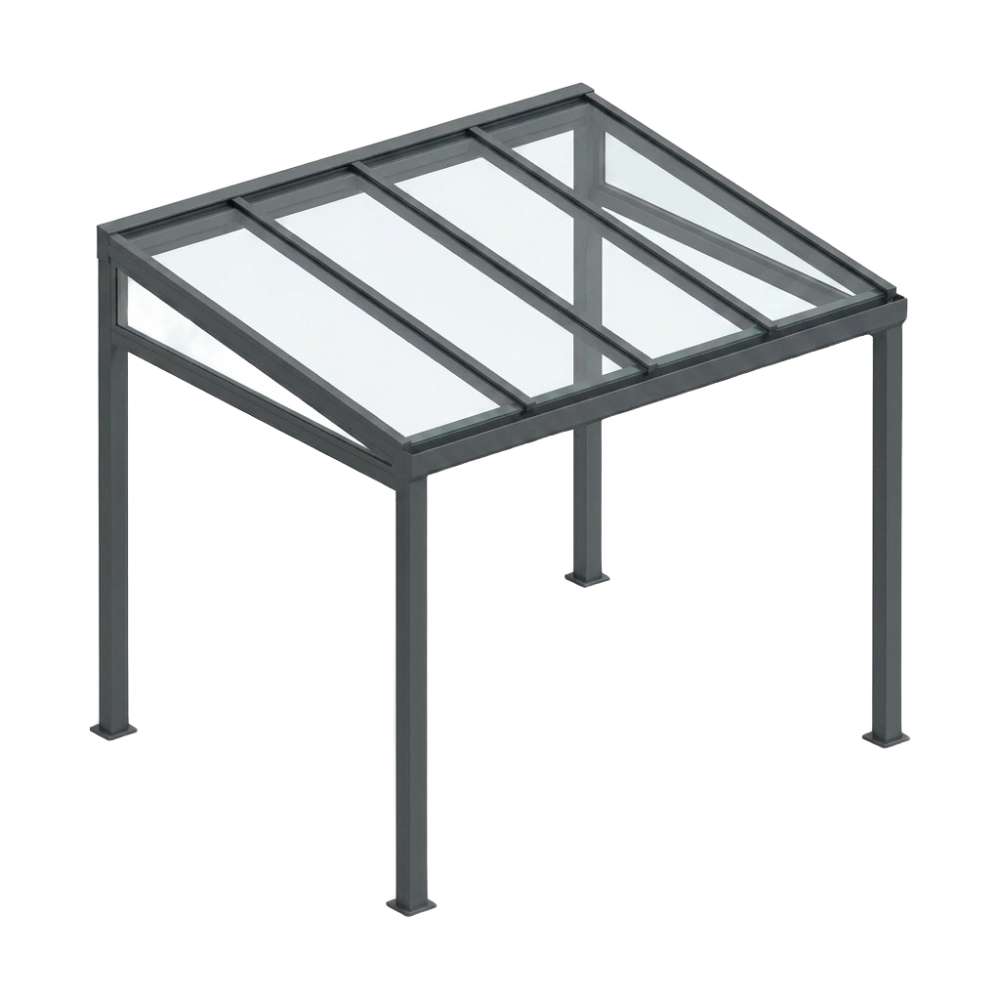
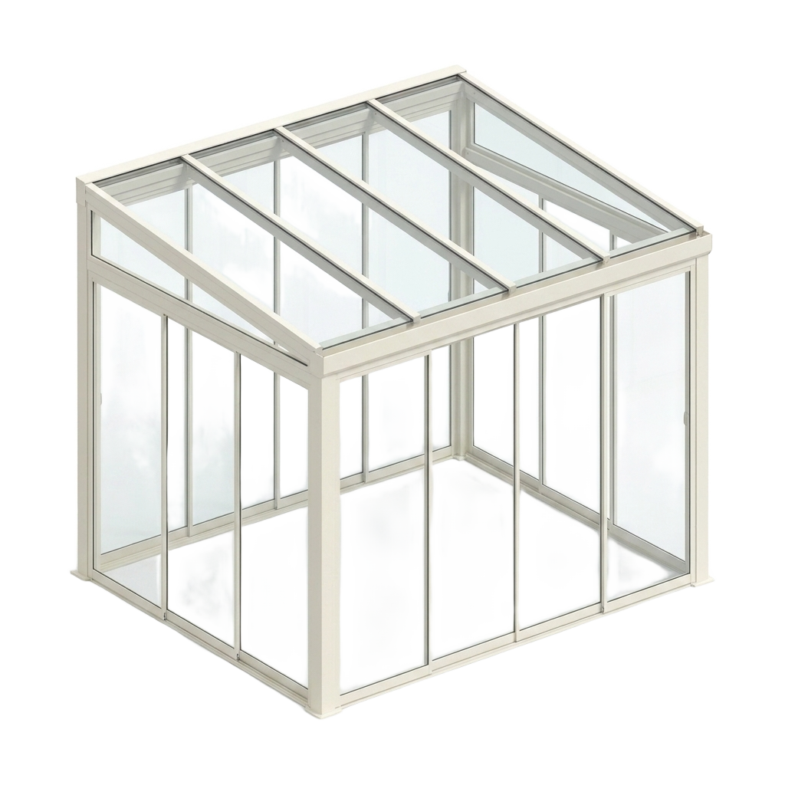
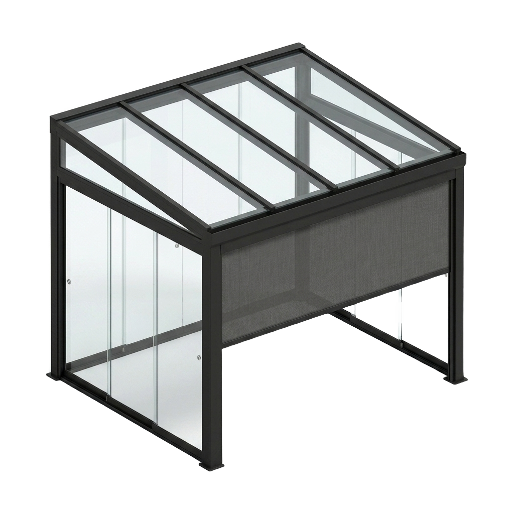

Lucky Zonwering maakt veranda's en terrasoverkappingen op maat in eigen productie in Oss en plaatst ze met eigen monteurs in heel Noord-Brabant. Genieten van uw terras bij zon, regen én wind — vakwerk sinds 1975, gratis advies aan huis en beoordeeld met een 5,0 op Google uit 124 reviews.
Een veranda of terrasoverkapping verandert uw terras in een echte leefruimte. Met een helder glasdak blijft u droog en houdt u toch volop daglicht, en met optionele glaswanden en screens zit u beschut tegen zon, regen en wind. Zo geniet u vanaf het vroege voorjaar tot diep in de herfst comfortabel buiten — bij uw woning in Oss of waar dan ook in Brabant.
Als familiebedrijf maken wij sinds 1975 maatwerk uit eigen huis. Doordat wij de veranda zelf produceren én met onze eigen monteurs plaatsen, heeft u maar één aanspreekpunt: van het gratis inmeten tot de oplevering en de service daarna. Hieronder leest u alles over een veranda op maat.
Van een open terrasoverkapping met glasdak tot een volledig beschutte buitenkamer met glaswanden en screens — alles op maat gemaakt en in de kleur van uw keuze.

Maximaal daglicht, droog terras — de klassieke terrasoverkapping.
Offerte aanvragen
Beschutting tegen wind en regen met behoud van uitzicht en licht.
Offerte aanvragen
Glaswanden plus screens voor schaduw, privacy en een gesloten buitenkamer.
Offerte aanvragenEen veranda van Lucky Zonwering is een investering die uw woongenot én de waarde van uw woning verhoogt. Dit zijn de belangrijkste voordelen:
Met een vast glasdak en optionele glaswanden gebruikt u uw terras het hele jaar door. Geen zomerterras meer, maar een echte buitenkamer waar u langer en vaker geniet.
De overkapping houdt u droog bij een regenbui en biedt — met screens — verkoeling op hete dagen en luwte als het waait. Zo zit u comfortabel, wat het weer ook doet.
Een veranda vergroot in feite uw leefoppervlak: een extra ruimte om te eten, te ontspannen of de kinderen te laten spelen, in directe verbinding met huis en tuin.
Een helder glasdak laat het daglicht door, zodat ook de aangrenzende kamers licht blijven. Uw woonkamer wordt niet donkerder — u wint juist een lichte buitenruimte.
Breid uw veranda uit met geïntegreerde led-verlichting, een terrasverwarmer, screens of glazen schuifwanden. Zo stelt u precies de buitenkamer samen die bij u past.
Benieuwd naar de mogelijkheden en een richtprijs? Stel online uw buitenleven op maat samen of vraag direct een gratis offerte aan.
Onze veranda's worden uitgevoerd in onderhoudsarm aluminium in vier tijdloze kleuren — passend bij elke gevel en tuin.
Met een veranda van Lucky Zonwering maakt u van uw terras een plek waar u elke dag van geniet. Een helder glasdak, sfeervolle verlichting en optionele screens — wij denken met u mee over de perfecte buitenkamer bij uw woning.

Geïntegreerde screens in de veranda geven schaduw, privacy en luwte zonder uw uitzicht te verliezen. Zo blijft uw buitenkamer aangenaam koel op zomerse dagen en behaaglijk beschut als het waait.

Van antraciet tot crème: onze veranda's en terrasoverkappingen staan bij honderden woningen in Oss en omgeving. Bekijk hieronder een paar van onze projecten en laat u inspireren voor uw eigen buitenkamer.

 Antraciet
Antraciet CrèmeBuitenleven
CrèmeBuitenlevenEen veranda laten plaatsen moet vooral ontzorgen. Daarom regelen wij alles uit één hand, in vier heldere stappen:
Wij komen vrijblijvend bij u langs in Oss of elders in Brabant, bekijken uw terras en adviseren over type, afmetingen, kleur en opties. Daarna meten we alles nauwkeurig op.
Uw veranda wordt in eigen productie op maat gemaakt in onderhoudsarm aluminium. Geen tussenhandel, maar maatwerk uit één hand — met een korte levertijd en een scherpe prijs.
Onze eigen, vaste monteurs plaatsen de veranda netjes, veilig en vakkundig en laten uw terras schoon achter. Geen onderaannemers, maar vakmensen die u kent.
Ook na de montage blijft Lucky Zonwering bereikbaar voor service en onderhoud. Dankzij onze eigen voorraad bent u bij een vraag of storing snel weer geholpen.
Zoekt u juist een overkapping met verstelbare lamellen die u open en dicht kantelt voor zon, schaduw of ventilatie? Bekijk dan onze pergola op maat met lamellendak. Ook die maken en monteren wij volledig op maat in heel Noord-Brabant.
Onze werkplaats en voorraad zitten aan de Ussenstraat 26A in Oss. Doordat we lokaal produceren én monteren, zijn de lijnen kort: we meten snel in, leveren op maat en blijven bereikbaar voor service. Veel Brabantse woningen — van vrijstaande huizen tot rijwoningen — hebben wij al van een veranda of terrasoverkapping voorzien.
Naast Oss plaatsen wij veranda's in de omliggende dorpen en steden:
Bekijk gerust onze projecten in en rond Oss of lees waarom klanten voor Lucky kiezen.
Een veranda heeft doorgaans een vast (glas)dak dat het terras volledig droog houdt, ideaal voor jaarrond gebruik. Een pergola heeft meestal verstelbare aluminium lamellen die u open en dicht kantelt. Lucky Zonwering levert beide op maat en adviseert tijdens het gratis advies aan huis welke oplossing het beste bij uw terras past.
Ja. Lucky Zonwering maakt veranda's en terrasoverkappingen op maat in eigen productie en plaatst ze met eigen monteurs. Zo heeft u één aanspreekpunt van het gratis inmeten tot de montage en de nazorg, met een scherpe prijs en korte levertijd.
Vaak mag een veranda of terrasoverkapping vergunningsvrij worden geplaatst, mits deze binnen de regels voor afmetingen en plaatsing op uw perceel valt. Dit verschilt per gemeente en situatie. Lucky Zonwering denkt mee en helpt u tijdens het advies aan huis op weg met de regels in uw gemeente in Oss en Noord-Brabant.
Ja. Met een glasdak en optionele glaswanden en screens maakt Lucky Zonwering van uw veranda een echte buitenkamer die u jaarrond gebruikt. In combinatie met verwarming en verlichting zit u ook in het voor- en naseizoen comfortabel buiten.
Ja. Een veranda van Lucky Zonwering is uit te breiden met geïntegreerde led-verlichting, een terrasverwarmer en screens of glaswanden. Zo blijft het comfortabel en sfeervol, ook 's avonds en in het koudere seizoen.
Onze veranda's zijn standaard leverbaar in antraciet, wit, crème en zwart, in onderhoudsarm aluminium. Lucky Zonwering adviseert u welke kleur het beste past bij uw gevel, kozijnen en tuin.
Doordat Lucky Zonwering in eigen productie werkt, zijn de levertijden kort. Na het gratis inmeten weet u precies waar u aan toe bent; de exacte termijn bespreken we tijdens het adviesgesprek.
De prijs van een veranda hangt af van de afmetingen, het dak (glas of polycarbonaat), de kleur en opties zoals glaswanden, screens en verlichting. Lucky Zonwering meet gratis bij u in en geeft daarna een heldere offerte op maat, geheel vrijblijvend.
Ja. Vanuit Oss zijn onze monteurs dagelijks actief in heel Noord-Brabant, waaronder Berghem, Heesch, Uden, Veghel, Ravenstein en 's-Hertogenbosch. Lucky Zonwering verzorgt advies, montage en nazorg in uw gemeente.
Weinig. De aluminium constructie van een veranda van Lucky Zonwering is onderhoudsarm, roest niet en hoeft alleen af en toe schoongemaakt te worden. Het glasdak houdt u helder met een sopje, zodat u jarenlang zorgeloos van uw buitenkamer geniet.